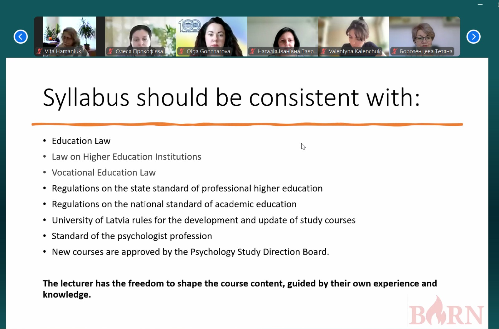
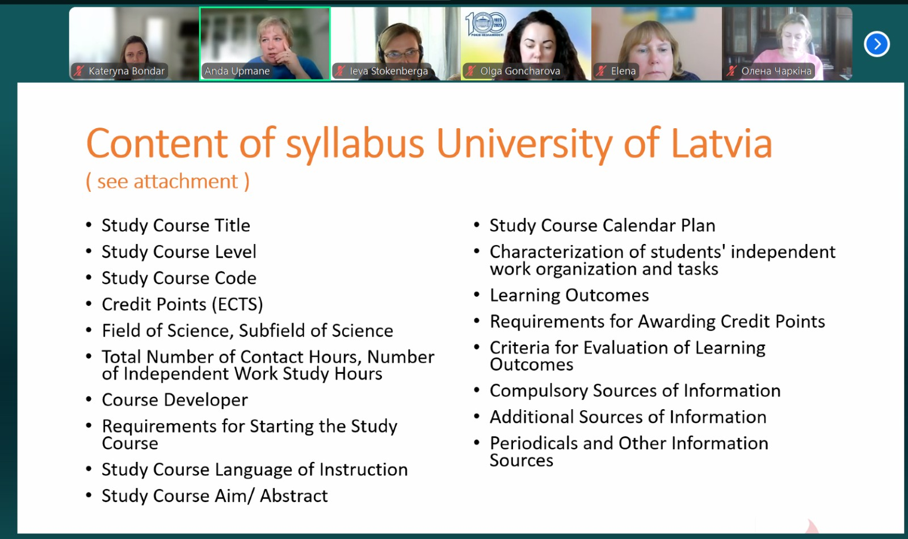
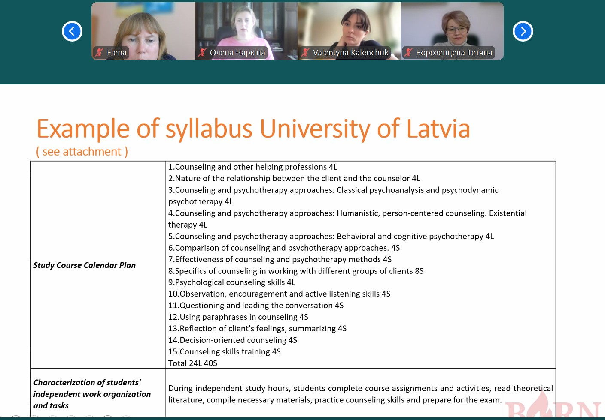
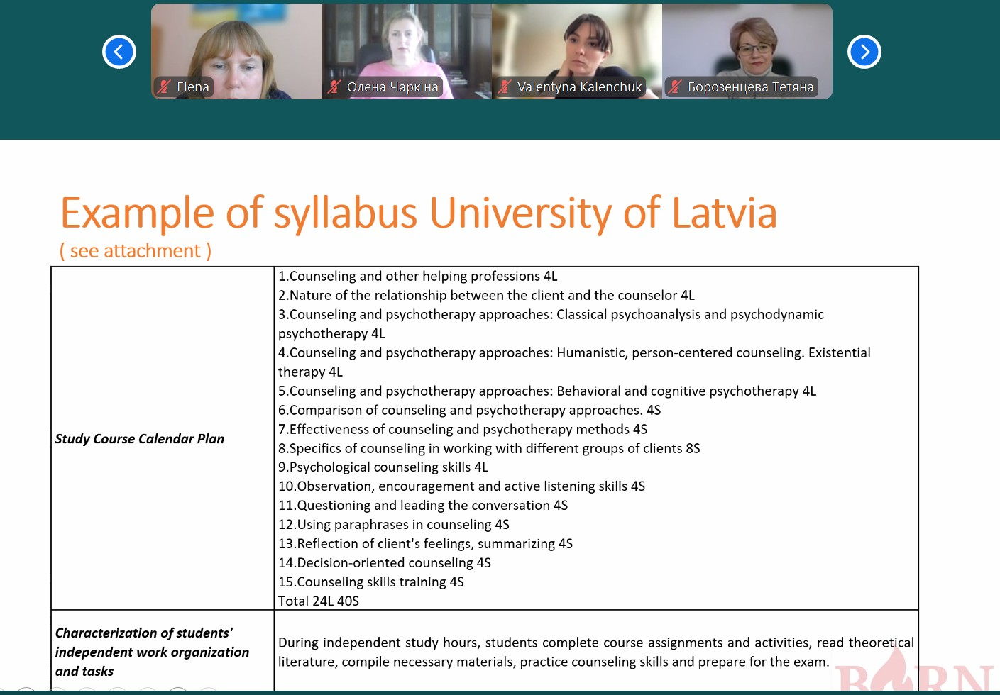
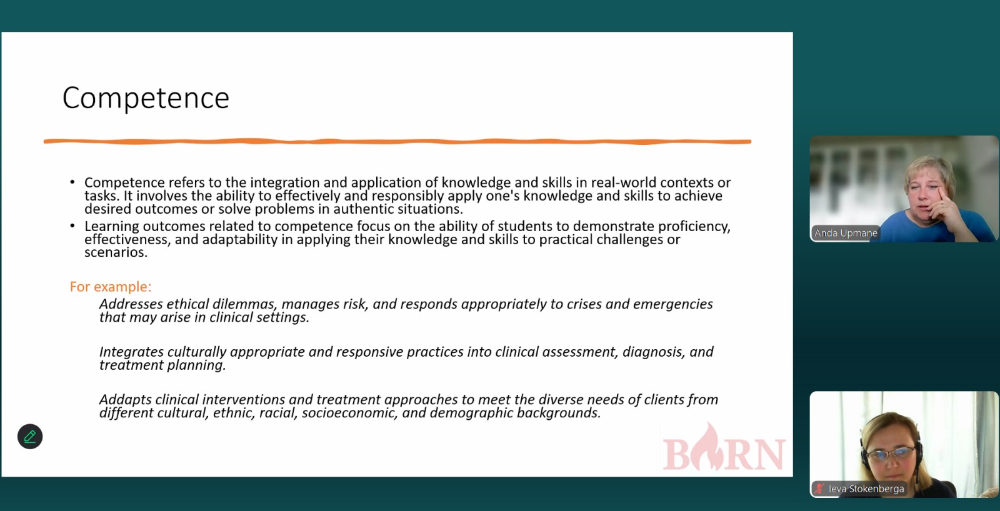
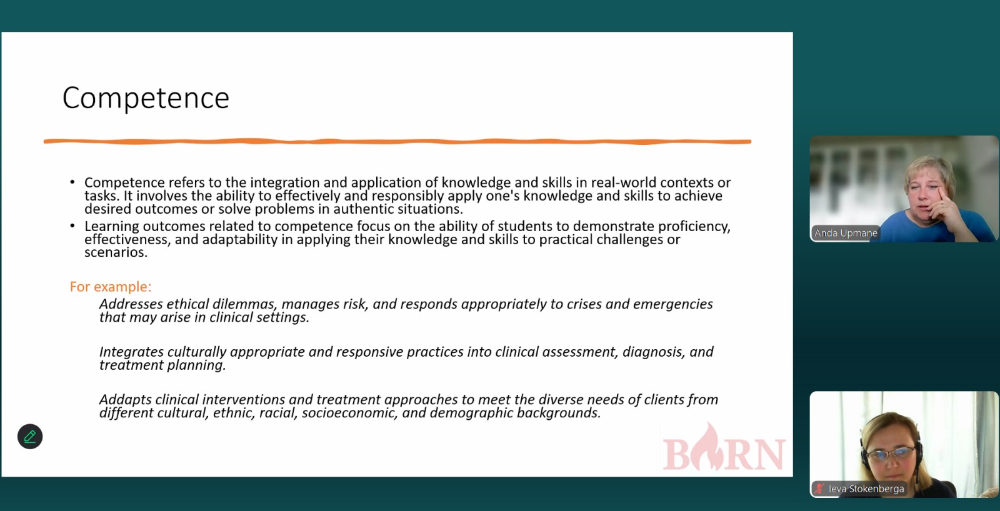

Webinar 2 Experience of developing syllabuses by Latvian Universities (April 29, 2024)
The webinar "Experience of developing syllabuses by Latvian Universities" on April 29, 2024, hosted by Dr. Anda Upmane, Associate Professor and Bachelor Program Guarantor in Psychology, delved into the standards governing the training of psychologists across four key domains: clinical, educational, organizational, and legal psychology. Notably, the bachelor's program does not confer professional practice rights; rather, it qualifies graduates for roles as research assistants, with a requisite bachelor's internship tailored towards scientific research spanning three years. Conversely, the master's program, in alignment with Latvian law enacted five years ago, empowers graduates to practice as psychologists.

The subsequent segment of the webinar zeroed in on syllabus development, particularly focusing on the "Fundamentals of Counseling" course, worth 6 credits. This analysis elucidated the syllabus's framework, encompassing the skills and knowledge imparted throughout the curriculum. Key highlights comprised: firstly, the syllabus aligns with Latvian legal standards governing psychologist roles; secondly, it delineates 6-8 skill and knowledge acquisition points, evaluated through two mid-semester theoretical tests and a case analysis exam (comprising 12-15 cases requiring commentary and demonstration of counseling prowess); and thirdly, it adopts a grading breakdown of 30% for classroom engagement, 20% for independent study, and 50% for the final examination. Furthermore, the webinar showcased methodologies for logically distributing knowledge and skill assessments within the course, elucidating how these components synergistically bolster program preparedness.
  


Moreover, supplemental to the webinar, Dean of faculty Prof., Dr. Ieva Stotelberga provided insights into Curriculum Mapping, exemplified through a bachelor's program in psychology. This methodology aids educators in aligning course content with intended learning outcomes, facilitating a comprehensive evaluation of students' knowledge, skills, and competencies in concordance with predetermined benchmarks.
 
